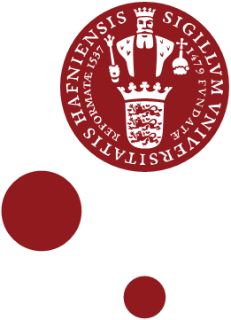

<template>
    <main class="sci-main b10k_contact">
        <b10k-header></b10k-header>

        <b10k-hero></b10k-hero>

        <section class="sci-content">
            <h2 class="sci-content-title">Contact Us</h2>

                <div class="sci-content-body">
                    <div class="left">
                        <h2>Data Coordinator - The Bird 10,000 genomes (B10K) Project</h2>
                        <h3>Daniel Bilyeli Øksnebjerg</h3>

                        <section class="contact">
                            <p>Email: <a target="_blank" href="mailto:daniel.oksnebjerg@sund.ku.dk">daniel.oksnebjerg@sund.ku.dk</a></p>
                            <p>Phone: +45 22 33 29 47</p>
                        </section>

                        <section class="address">
                            <p>University of Copenhagen</p>
                            <p>Section for Ecology and Evolution</p>
                            <p>Building 3</p>
                            <p>Universitetsparken 15</p>
                            <p>2100 Copenhagen Ø,</p>
                            <p>Denmark</p>
                        </section>
                    </div>
                    <div class="right">
                        
                    </div>
                </div>
    </section>

        <b10k-powered-by></b10k-powered-by>

        <b10k-footer></b10k-footer>
</main>
</template>